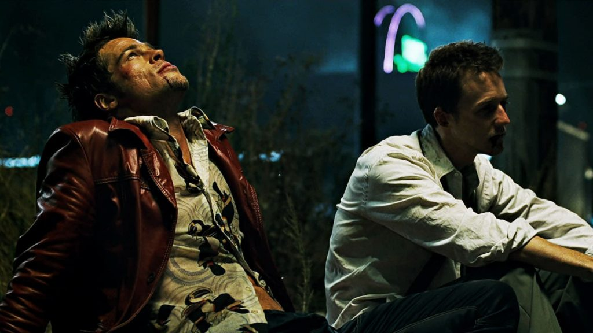

Watch the thrilling trailer for "Fight Club," a film that explores themes of identity, consumerism, and rebellion against societal norms. Featuring intense scenes and thought-provoking dialogue, this trailer gives a glimpse into the chaotic world created by Chuck Palahniuk’s novel and brought to life by director David Fincher.
Experience the powerful soundtrack of "Fight Club," which includes a mix of alternative rock and industrial music that perfectly captures the film's gritty atmosphere. This audio commentary discusses key scenes and the impact of music on the film's narrative, featuring insights from the composer and film critics.
"Fight Club" follows an unnamed narrator (played by Edward Norton) who struggles with insomnia and dissatisfaction in his corporate life. He forms an underground fight club with soap salesman Tyler Durden (Brad Pitt), leading to an anarchistic movement. As their relationship deepens, the narrator grapples with his own identity and the consequences of their actions.
